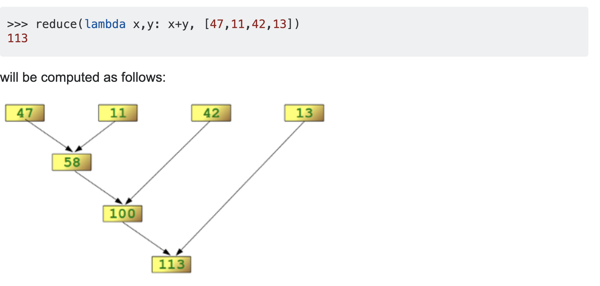

Slovak Learning
Ok. This post is likely not interesting for any visitor. I am learning the language and after a discussion with my girlfriend it turned out I rather write down the new vocabulary for learning the language the fastest.
In this post I write down my progress and I can go back to it at later stages.
RDDs Transformations and Actions
This post continues the discussion started a few times ago on RDD and Spark.
I will try to go here in the lifecycle of an RDD and will present the major Transformation and Actions functions. I will moreover touch on the physical implementation of Spark as this will give you the mental tools to properly understand how to properly structure your Spark workflow in order to optimize the performance.
On RDDs
A brief overview on RDDs was given in the previous post and you are referred to it for a brief introduction.
RDDs are lazy. This, means that only if the data is needed for a certain computation the data is read from the underlying storage system.
An RDD in Spark is simply an immutable distributed collection of objects. Each RDD can be split into multiple partitions, which may be computed on different nodes of the cluster.
The typical RDD lifecycle is as follows:
- An RDDs is first created from stable storage or by some Python objects.
RDDs offer then two types of operations: transformations and actions.
- Transformations create a new RDD from an existing one. Transformations are lazy, meaning that no transformation is executed until you execute an action.
- Actions compute a result based on an RDD, and either return it to the driver program or save it to an external storage system (e.g., HDFS). This is the end of the lifecycle.
Transformations and actions are different because of the way Spark computes RDDs. Although you can define new RDDs any time, Spark computes them only in a lazy fashion, that is, the first time they are used in an action.
For the creation of RDDs and the partitions of them please refer to the previous post I will now briefly introduce the physical execution of spark before illustrating some of the most the key transformations and actions.
TODO On the physical Execution
Transformations
Following are examples of some of the common transformations available.
For a detailed list, see RDD Transformations
Run some transformations below to understand this better.
Note: If some of the queries are taking too long to complete, try restarting the kernel, and rerunning the cell above.
from pyspark.sql import SparkSession
spark = SparkSession \
.builder \
.master ("local[8]") \
.appName("My first Spark Session") \
.getOrCreate()
sc = spark.sparkContext
fruits = sc.textFile('wasb:///example/data/fruits.txt')
fruits.collect()
# map
fruitsReversed = fruits.map(lambda fruit: fruit[::-1]) ## the fruit[::-1] inverts the letters of the word
# Note: the `collect` command is NOT a Transformation, it is an Action
# used here for the purposes of showing the results! Just use it when
# you know that the action will be small enough to be handled by the
# memeory of the machine you are working on. Otherwise, no chance you
# will be able to display your results and you will better have to
# save the results on a HDFS cluster.
fruitsReversed.collect()
# filter
shortFruits = fruits.filter(lambda fruit: len(fruit) <= 5)
shortFruits.collect()
# flatMap
characters = fruits.flatMap(lambda fruit: list(fruit))
characters.collect()
# union
fruitsAndYellowThings = fruits.union(yellowThings)
fruitsAndYellowThings.collect()
# intersection
yellowFruits = fruits.intersection(yellowThings)
yellowFruits.collect()
# distinct
distinctFruitsAndYellowThings = fruitsAndYellowThings.distinct()
distinctFruitsAndYellowThings.collect()
# groupByKey
yellowThingsByFirstLetter = yellowThings.map(lambda thing: (thing[0], thing)).groupByKey()
for letter, lst in yellowThingsByFirstLetter.collect():
print("For letter", letter)
for obj in lst:
print(" > ", obj)
# reduceByKey
numFruitsByLength = fruits.map(lambda fruit: (len(fruit), 1)).reduceByKey(lambda x, y: x + y)
numFruitsByLength.collect()
Some quick note on reduce and reduceByKey
The logic of the reduce function is as follows

input_list = sc.parallelize(range(5))
sum_of_squares = input_list.map(lambda x: x ** 3).reduce(lambda x, y: x + y)
print(sum_of_squares)
It is now clear from the examples below that the lambda function of the reduce by key function below takes as x the value of the key and as y the second value of the key. This in analogy to the reduce key above. It performs hence essentially the same function as the reduce option for each individual key.
fruits = sc.parallelize(["apple", "orange", "java", "call++"])
## Example 1 ##
numFruitsByLength = fruits.map(lambda fruit: (len(fruit), 2))
print(numFruitsByLength.collect())
numFruitsByLength = numFruitsByLength.reduceByKey(lambda x, y: x + y)
print(numFruitsByLength.collect())
## Example 2 ##
numFruitsByLength = sc.parallelize([(5, 2), (6, 3), (4, 2), (6, 2)])
print(numFruitsByLength.collect())
numFruitsByLength = numFruitsByLength.reduceByKey(lambda x, y: x + y)
print(numFruitsByLength.collect())
mapValues
How to interpret mapValues
print(test_entries.map(lambda x: (len(x["choices"]), x["choices"])).groupByKey().map(lambda x : (x[0], len(list(x[1])))).collect())
print(test_entries.map(lambda x: (len(x["choices"]), x["choices"])).groupByKey().mapValues(len).collect())
Actions
Aggregate
seqOp = (lambda local_result, list_element: (local_result[0] + list_element, local_result[1] + 1) )
combOp = (lambda some_local_result, another_local_result: (some_local_result[0] + another_local_result[0], some_local_result[1] + another_local_result[1]) )
sc.parallelize([1, 2, 1, 2]).aggregate((0, 0), seqOp, combOp)
Literature
On The Brave Browser
So I recently started to work with the Brave browser. I started to see
it on a LinkIn cryptocurrency influencer webpage and I was rather
suspicious. I noticed it but I did not further investigate. I just had
integrated DuckDuckGo into my Chrome browser and I was feeling ok
with that at the time.
I started to get quite interested in it when I saw that the Prof. of Communication Networks of the University I am currently visiting was using it. He, as an expert using the browser. There must be some goodness in it.
Remotely Login - SSH Key
This posts outlines the way to save ssh into a virtual machine using a
generated SSH-key. It is very much in the spirit of the ssh keys
registration for github, for which you are referred to this post.
When creating a home-made ML model
In this post I go over some beginner mistake and set up the workflow for further works that involve some custom-created ML model.
Embedding Watson Assistant into a Client Webpage
This demo introduce the necessary steps in order to create an intelligent Watson Chatbot and deploy it in your/your client website.
Nikola Set Up - Do it the Simple Way.
Nikola is a python package to automatically generate static webpages. This is more secure than operating through dynamic websites for non-expert users. Moreover the integration with org will allow you to easily generate blogs based on your org documents and this will prove to be especially useful given that you can work following your literate programming workflow without bothering too much on the format.
You can finally generate and publish interesting discoveries in an instantaneous way.
WSGI, APACHE and NGINX
This posts contain a brief overview of the deployment options for Python applications. It will give a brief overview on the different web servers types and the necessity for utilizing a WSGI server when deploying a Python application.
UML Diagrams with PlantUML
For my first bigger project I had to construct a flow diagram describing the architecture of a back-end model analytics model I am working on.
This post briefly discuss on UML and gives the set-up of Plantuml on
emacs.
Accessing protected content via GET requests
Sometimes when I want to make notes I prefer to download an html file,
transform it to an .org file via pandoc and to edit and make notes
in org mode.
Nonetheless if the technique works fine for non-protected HTML pages, sometimes you are required to pass some authorization variables to access a page. This post outline my solution to deal with the latter case.